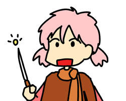
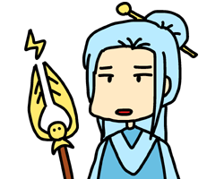

お知らせ
もしバグを発見された場合は、メールにてお知らせください。折り返し、質問メールを送信します。
Androidマーケットのページにコメントを投稿をいただいても、こちらで詳細が分からないので対応が難しいです。ご協力よろしくお願いします。
クロノス・クラウンでは、「Army & Maiden」シリーズの製作にあたり、PCとAndroidコンパチブル（相互互換）で動作する、ゲームシステムを開発しました。Webサイトから、Android版、PC版のどちらも入手できます。
はじめに
このアプリケーションは、リアルタイム・ウォー・シミュレーションゲームです。
自軍のユニットを動かしていき、敵を全滅させれば、ステージ・クリアです。
特に難しいルールはありません。移動マーカーをドラッグすれば、その場所にユニットが動いて行きます。
ユニットには、それぞれ特性があります。効率よく、ユニットを動かして、敵を殲滅してください。
また、各ユニットは、それぞれ複数の技を持っています。作戦に応じて使い分けてください。
本ゲームは、1ステージあたり、1～5分程度でクリアできます。クリア時間と獲得スコアが記録されるので、最短クリア、最高スコアを目指してください。
本ゲームの企画・開発者は、柳井政和です。
Webサイトでは、色々な趣味の記録を書いたり、開発しているソフトを公開したりしています。マンガも描いています。是非、遊びに来てください。
Web Site : Cronus Crown （クロノス・クラウン）
Appli Blog : Army & Maiden
操作
通常画面（移動先の選択）
通常の画面では、「移動マーカー」をドラッグすることで、各ユニットの移動先を設定できます。
移動先を設定したユニットは、自動でその場所へのルートを探索して、その場所へと移動します。
移動には、注意すべき点があります。移動力は、ユニットごとに違います。
騎兵などは素早く移動します。しかし、弓兵や魔術師など、遠距離系の攻撃を行うユニットは足が遅いです。
移動先の選択を行うには、画面左上の、「移動」ボタンをクリックします。
また、画面左上の、「範囲」ボタンをクリックすれば、移動マーカーをまとめて移動することができます。
ユニット情報画面（攻撃方法の選択）
「ユニット情報画面」に変更するには、画面左上の、「ユニット」ボタンをクリックします。
「ユニット情報画面」では、各ユニットをクリックすることで、情報画面を表示できます。
クリックしたユニットが自軍の場合は、攻撃方法を選択できます。
「ユニット情報画面」では、タイマーは停止します。そのため、どの攻撃方法を選択するか、ゆっくりと選ぶことができます。
オプション画面
「オプション画面」に変更するには、本体の「MENU」キーを押します。
「オプション画面」では、データのセーブを行ったり、画面をタイトルに戻したりできます。
また、音量や難易度、メッセージ表示などを切り替えられます。
地図のドラッグ
「移動」ボタン選択状態で、ユニットのいない場所をドラッグすれば、地図の表示位置を変更できます。
また、画面右上の全体マップをドラッグしても、地図の表示位置を変更できます。
タイマー
画面左上には、タイマーが表示されています。タイマーは、ステージの開始時間からの経過秒数です。
最短クリアを目指して、トライしてください。
人物
主人公「シェル・ピンク」
名門貴族ピンク家の長女。素行が悪く、男勝りで、士官学校に放り込まれる。
しかし馬があったのか、士官学校を楽しむ。
将来の夢は、王国初の女将軍。
先生「フロスティ・グレイ」
王国では珍しい女性指揮官。今は引退して、教官をしている。
シェルにはいつも手を焼いている。ダウナー系。
不幸の影が拭えない、非モテの三十代。
著作権
企画・グラフィック・プログラム・シナリオは、柳井政和が行っています。
サウンドは、以下の方々の楽曲・音声を利用させていただいております。ありがとうございます。
ゲーム中の楽曲：music by ROBIN
ゲーム中の効果音：音楽素材：魔王魂
Web Site
http://army-and-maiden.blogspot.com/
感想やご意見などは、下記宛てによろしくお願いします。